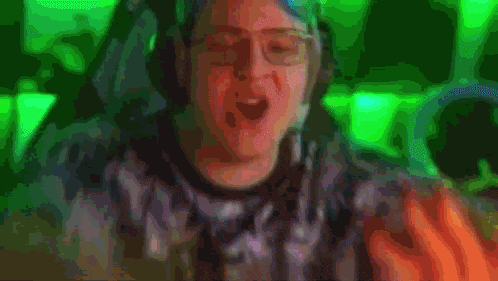

Происхождение
Изначально число 42 было обычной шуткой одного писателя. Идея романа «Автостопом по Галактике» возникла у Дугласа в Австрии, во время путешествия автостопом в Стамбул. Название пришло ему в голову после происшествия, случившегося в 1971 году, когда он в молодости путешествовал автостопом по Европе с книгой «Путеводитель по Европе для автостопщиков». Однажды он лежал пьяным на поле в Инсбруке и смотрел на звёзды. С ним была книга, и ему пришло в голову, что неплохо было бы написать путеводитель для автостопщиков по галактике.
В одной из глав сверхразумная раса существ создаёт суперкомпьютер «Думатель», чтобы найти окончательный ответ на «главный вопрос жизни, Вселенной и всего такого». На поиск ответа суперкомпьютеру понадобилось 7,5 млн лет. В итоге Думатель выдал ответ — «42», чем вызвал недоумение у вопрошающих. Благодаря роману «42» стал универсальным ответом на все пространные и плохо сформулированные вопросы, олицетворяющим поговорку «Какой вопрос — такой ответ».
23 декабря 2023 года стример Пятёрка(Кирилл Баранов/Босс/ФУГА ТВ/Медиабахила/Сопка/Жопер/Пятка/Босс), на своём Boosty смотрел фильм снятый по книге Дугласа Адамса «Автостопом по Галактике». И там как и в книге есть момент с суперкомпьютером, который дал ответ «42». Поворотным моментом стал конфликт 5opka с блогером Гуакомоле. В ходе этого конфликта Пятёрка начал использовать «42» в противовес «52». И фанаты Босса начали продвигать «42» в массы. Во всех чатах, всех стримеров начало появляться это число. Первое время мем «42» был локальным мемом Пятёрки и его чата. Постепенно фанатов Великого Босса становилось больше, следовательно и 42 БРАТУХ также становилось больше.
Пятёрка в субкультуре
Кирилл в этой субкультуре изначально был основным лицом, но сейчас «42» уже меньше связано с ним. Да каждый кто считает себя «42 БРАТУХОЙ» точно знают кто такой Пятёрка, но не обязательно быть прям фанатом. На данный момент «42» это философия жизни, и именно эту философию людям показал Босс.
Атрибуты
Cам Пятёрка постоянно меняет свои образы, но каждый его образ имеет сходство с другим. Это сходство заключается в необычности этих образов. Просто посмотрите на то что носят обычные люди на улице, какие причёски носят обычные люди. У пятёрки были голубые, зелёные, красные, жёлтые, волосы. Была причёска Vектора из «Гадкий Я», причёска леопард.
Как можно понять по образам самого Кирилла, быть 42 БРАТУХОЙ означает быть не таким как все. Вообще все субкультуры так или иначе не подходят под понятия нормы, но именно «42» наиболее не похожи на других людей. Банально представьте что не оденет здравомыслящий человек в обычной жизни, условно чтобы пойти в магазин. Именно это и наденет на себя 42 БРАТУХА. Шуба? Конечно! Костюм короля? Естественно! Важно чтобы наряд был необычным. Также чаще всего ваша одежда должна причислять вас к высшему сословию. Шубы, жилетки, брюки, костюмы. Но нельзя забывать об украшениях. Украшения очень важны для вашего образа. Они как и одежда должны показывать, что вы очень богаты: корона, шляпы, цепи, кольца. Желательно чтобы всё было золотым.